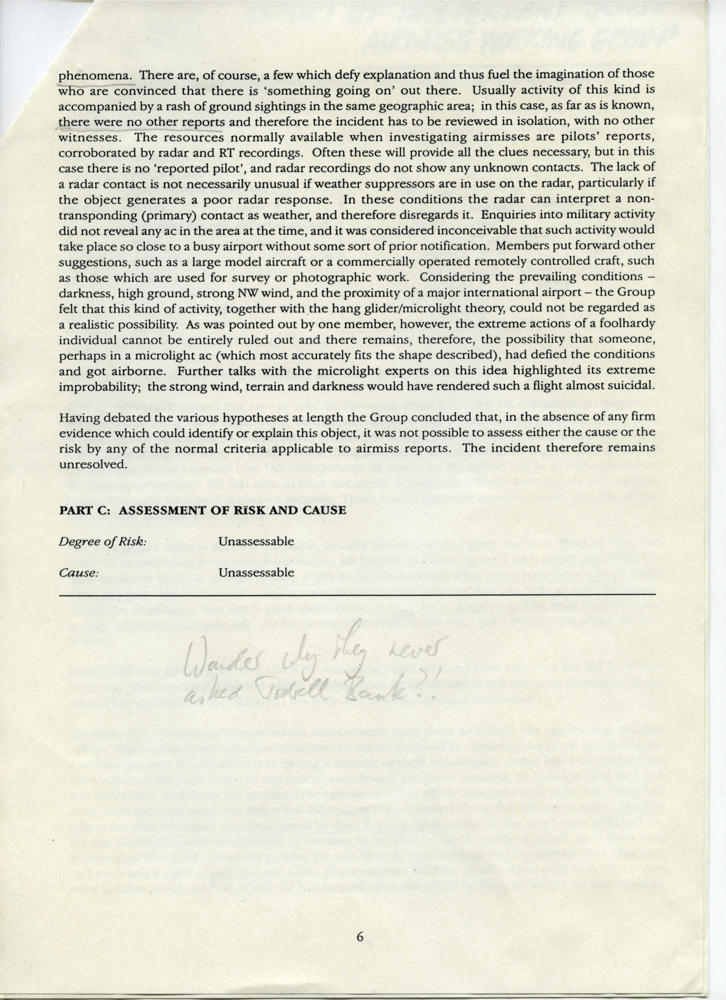

THE B737 PILOT reports that he was over the Pennines, about 8 or 9 NM SE of Manchester Airport, at 4000ft, while being radar vectored by Manchester radar on 119.4. He was flying at 180-210 kt on a N heading and squaking 5734 with Mode C selected. Although it was dark, visibility was over 10 km with a fairly strong NW wind (340/30). While flying just above the tops of some rugged Cu both he and the first officer saw a lighted (see JAS notes) object fly down the RH side of the ac at a high speed from the opposite direction. He was able to track the object through the RH windscreen and side window, having it is sight for a total of about 2 seconds. There was no apparent sound or wake. The first officer instinctively 'ducked' as it went by.
The first officer reports that his attention, initially focused on the glare shield in front of him, was diverted to something in his peripheral vision. He looked up in time to see a dark object pass down the right hand side of the ac at high speed; it was wedge-shaped with what could have been a black stripe down the side. he estimated the object's size as somewhere between that of a light ac and a Jetstream, though he emphasised that this was pure speculation. it made no attempt to deviate from its course and no sound was heard or wake felt. He felt certain that what he saw was a solid object - not a bird, balloon or kite.
MANCHESTER ATC reports that the B737 was being radar vectored from Dayne to the ILS for RW 24 when the pilot reported a lighted object passing close by above and in the opposite direction. There was no known traffic in the vicinity at the time and no radar contacts were seen. JAS Note (1): Telephone conversations subsequently took place with both the captain and his first officer. the captain remained convinced that the object was itself lit. Although he could not determine a definite pattern, he described it has having a number of small white lights, rather like a Christmas tree. He confirmed the high speed of the object, and though unable to estimate the distance, said he felt it was very close. Following the incident, the captain and first officer independently drew what they had seen, both agreed about the shape but differing in their opinions about the lighting aspects. The first officer felt that the object was illuminated by their landing lights, which at that stage were switched on. He was unable to assess the distance, other than to say that he involuntarily 'ducked', so it must have appeared to him to have been very close. He was entirely convinced, as was the captain, that they had seen a solid object and not a Met phenomenon, balloon or any other craft with which they were familiar, or a Stealth ac, which he [the captain] had himself had seen and which he feels he would have recognised. JAS Note (2): Despite exhaustive investigations the reported object remains untraced. A reply of the Ciee radar shows a number of secondary contacts, including the subject B737, being radar sequenced in the Manchester TMA and zone. The B737 tracks over two almost stationary primary contacts just N of Leek on a NW heading while descending through FL 70-60. On entering the Manchester TMA, passing FL 50, it is vectored right onto about 040 deg, and continues to descend on a NE track along the E boundary of the Manchester TMA to within 0.75NM of the Daventry CTA, where the base of CAS is FL 45. At this point, passing 3600 Mode C, the ac is turned onto a L base for RW 24 as part of a busy sequence of inbound ac. At no time during the downwind leg is any other radar contact seen in the vicinity. An extract from the RT recording on 119.4, which shows that the B737 was given decent clearance to 4000 ft at 1845:30, follows:
From:
B737 (1848) - 'c/s we just had something go down the RHS just above us very fast.'
Manchester - 'Well, there's nothing seen on radar. Was it er an ac?'
B737 - 'Well, it had lights, it went down the starboard side very quick.'
Manchester - 'And above you?'
B737 - 'er, just slightly above us, yeah.'
Manchester - 'Keep an eye out for something, er, I can't see anything at all at the moment so, er, must have, er, been very fast or gone down very quickly after it passed you I think.'
B737 - 'OK. Well, there you go!'
The possibility that the object might have been a hang glider, paraglider or microlight was investigated, but all the operating authorities, without exception, agreed that this was an extremely unlikely explanation, for various reasons, but mainly because none of these activities takes place at night. In addition, there are obvious hazards of flying in the dark, from high ground (the peaks in this area along the Pennine ridge range from 1600 to over 2000 ft), string winds, and because these aircraft are unlit. JAS also explored the possibility of military activity, but could find no evidence in support of this from any official source. In any case, it seems most unlikely that such a flight would have been conducted in CAS and so close to a busy international airport. Because of the B737's proximity to the uncontrolled airspace to the E of Manchester, during the downwind leg, which covers the airmiss period, the possibility of unknown military or civil activity in the adjacent FIR cannot be completely discounted. However, the likelihood of such activity escaping detection is remote, as the area is well served by several radars and any movements a the levels in question would almost certainly have generated a radar response.
Information available to the Working Group included reports from the pilot of the B737, transcripts of the relevant RT frequencies, a video recording, and reports from the air traffic controllers involved.
|  |
The Group were anxious to emphasise that this report, submitted by two responsible airline pilots, was considered seriously and they wished to commend the pilots for their courage in submitting it, and their company, whose enlightened attitude made it possible. Reports such as these are often the object of derision, but the Group hopes that this example will encourage pilots who experience unusual sightings to report them without fear of ridicule. It was quickly realised by all members that, because of its unusual nature, they could only theorise on the possibilities once normal avenues of investigation had been explored. There is no doubt that the pilots both saw an object and that it was of sufficient significance to prompt an airmiss report. Unfortunately, the nature and identity of this object remains unknown. To speculate about extra-terrestrial activity, fascinating though it may be, is not within the Group's remit and must be left to those whose interest lies in that field. It is probably true to say, however, that almost all unusual sightings can be attributed to a wide range of well known natural phenomena. there are, of course, a few which defy explanation and thus fuel the imagination of those who are convinced that there is 'something going on' out there. Usually activity of this kind is accompanied by a rash of ground sightings in the same geographic area; in this case, as far as is known, there were no other reports and therefore the incident has to be viewed in isolation, with no other witnesses. The resources normally available when investigating airmisses are pilots' reports, corroborated by radar and RT recordings. Often these will provide all the clues necessary, but in this case there is no 'reported pilot', and radar recordings do not show any unknown contacts. The lack of a radar contact is not necessarily unusual if weather suppressors are in use on radar, particularly if the object generates a poor radar response. In these conditions the radar an interpret a non-transponding (primary) contact as weather, and therefore disregards it. Enquiries into military activity did not reveal any ac in the area at the time, and it was considered inconceivable that such activity would take place so close to a busy airport without some sort of prior notification. members put forward other suggestions, such as large model aircraft or commercially operated remotely controlled craft, such as those which are used for survey or photographic work. Considering the prevailing conditions - darkness, high ground, strong NW wind and the proximity of a major international airport - the Group felt that this kind of activity, together with the hang glider/microlight theory, could not be regarded as a realistic possibility. As was pointed out by one member, however, the extreme actions of a foolhardy individual cannot be entirely ruled out and there remains, therefore, the possibility that someone, perhaps in a microlight ac (which most accurately fits the shape described ), had defied the conditions and got airborne. Further talks with the microlight experts on this idea highlighted the extreme improbability; the strong wind, terrain and darkness would have rendered such a flight almost suicidal.
Having debated the various hypotheses at length the Group concluded that, in the absence of any firm evidence which could identify or explain this object, it was not possible to assess either the cause or the risk to any of the normal criteria applicable to airmiss reports. The incident therefore remains unresolved.